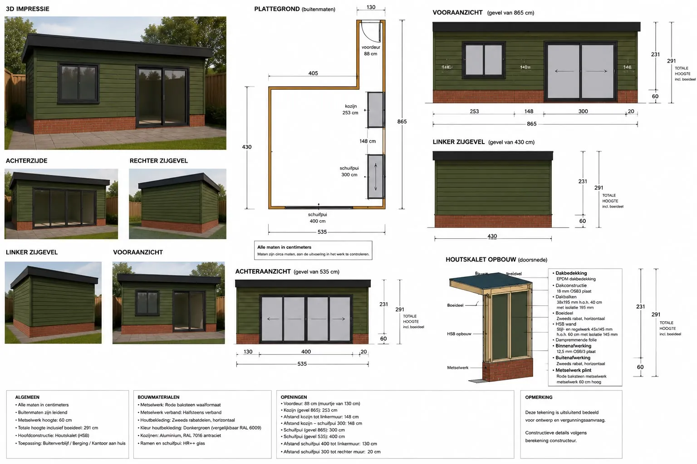
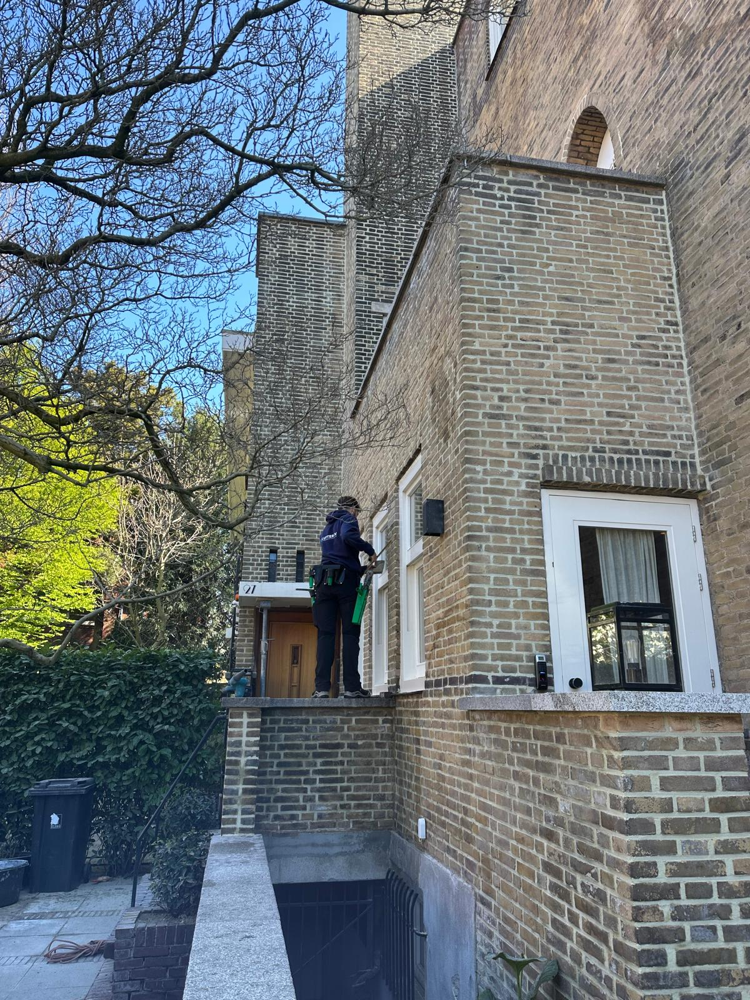

Kennismaking & Inspectie
Elk succesvol project begint met een helder gesprek. Wij komen op locatie voor een grondige inspectie, bespreken uw visie, meten alles nauwkeurig in en beoordelen direct de technische haalbaarheid van uw wensen.

Offerte & Planning
U ontvangt een transparante, gespecificeerde offerte zonder verborgen kosten, vaak ondersteund door een 3D of bouwkundig ontwerp. Na uw akkoord stellen we een strakke planning op zodat u precies weet wanneer we starten en opleveren.

Uitvoering & Vakmanschap
Onze meestervakmensen gaan aan de slag. Wij werken uitsluitend met premium materialen, garanderen een veilige en schone werkplek, en houden u via korte communicatielijnen continu op de hoogte van de voortgang.

Oplevering & Garantie
Pas als u 100% tevreden bent, is het project voor ons afgerond. We lopen het gehele resultaat tot in het kleinste detail samen met u na en bieden uitgebreide garantie op het geleverde high-end vakwerk.